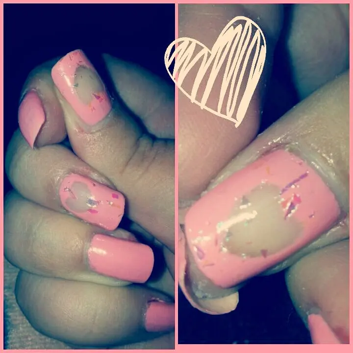

proposta di San Valentino nail art
Come da titolo voglio postare la mia proposta nail art di San Valentino.
Oggi userò due smaltini Avon, una marca per me TOP. La uso regolarmente essendo anche presentatrice insieme a mia sorella. Quindi sarà molto spesso argomento dei miei prodotti. Vi ho avvertite :D
Detto ciò volevo però dirvi che questi due smaltini non li ho acquistati stavolta ma bensì vinti a un giveaway a natale indetto dalla bellissima https://m.youtube.com/user/SweetFairyPink87 . anzi vi posto proprio la sua pagina Facebook https://m.facebook.com/profile.php?id=244714955609306
Visitatela vi renderete conto di quanto è brava. A me piace molto ed è sempre gentile. ^_^ Ci tenevo a dire questo perché, anche se é un umile blog mi faceva piacere che vedeste da chi ho vinto delle cosine troppo carine. Infatti non solo gli smaltini ho vinto ihihih era tutto molto bello e gradito.
Vabbè tornando a noi
Dunque mi è servito per questa nail art:● smalto rosa● smalto top coat glitterato● Cotton fiock● acetone
Ho scelto il rosa per San Valentino perché chi l'ha detto che l'amore è simboleggiato solo dal colore rosso??Ogni anno vediamo queste nail art tutte rosse, cuori a destra e a manca.. Beh io il cuore ce lo metto perché Sì, quello simboleggia l'amore in assoluto ma il colore credo sia irrilevante. O almeno per cambiare un pò. Per non essere sempre un qualcosa di scontato e allora ho optato per il rosa bambola. :D
Ho passato un filo di rosa su tutte le unghie. Il rosa mi mette allegria non so perché. Dopodiché ho bagnato un Cotton fiock leggermente con l'acetone, non bagnatissimo ma nemmeno tanto tanto asciutto e sul pollice e il medio ho disegnato un cuore. Diciamo ho "cancellato" lo smalto a quel posto. Ne ho preso un altro pulito e fatto la stessa procedura per definire bene il cuore e infine ho passato solo sulle due dirà che ho fatto i cuori il top coat glitterato. Una nail art semplice ma molto carina per San Valentino. Et voilà ecco il risultato:
